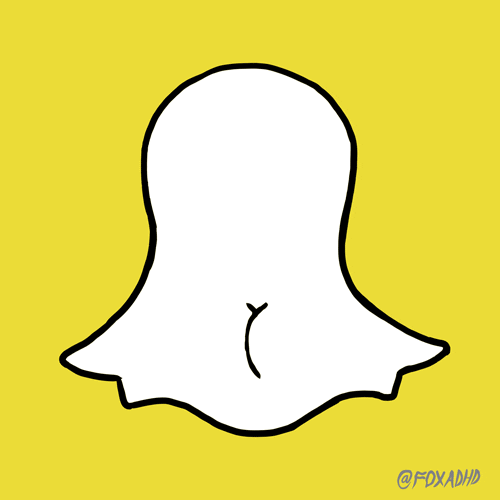
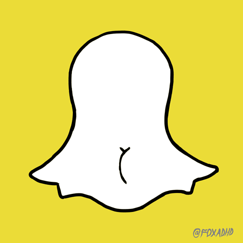
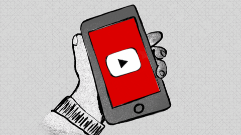
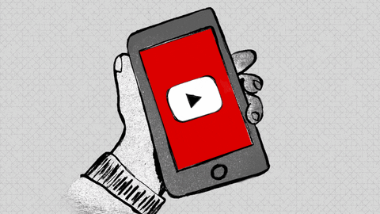
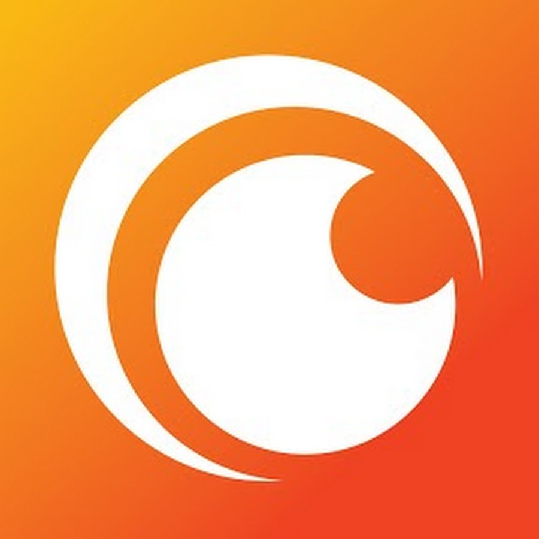
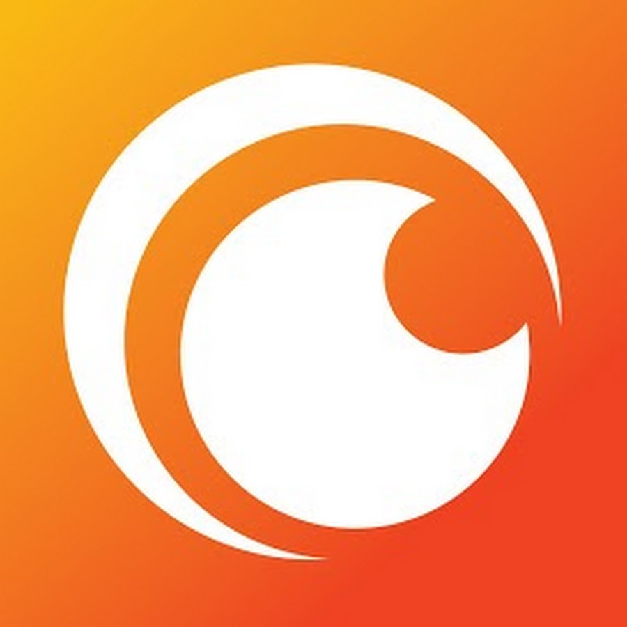

MES APPLICATION FAVORITS
N°1:Snapchat
 

Son histoire:
Snapchat (ou Snap dans le langage courant) est une application gratuite de partage de photos et de vidéos de la société Snap Inc.,
disponible sur plateformes mobiles iOS et Android.
Elle a été conçue et développée par des étudiants de l'université Stanford en Californie.
L'âge requis pour télécharger et utiliser cette application est fixé à 13 ans1,2.
Chaque photographie ou vidéo envoyée ne peut être visible par son destinataire que durant une période de temps allant d'une à dix secondes ou, depuis récemment, avec une limite de durée de 1 min.
snap
N°2: Youtube
 


Son Histoire :
YouTube (en français : [ jutyb] ou [ jutjub]a, en anglais : [ˈjutub]b) est un site web d’hébergement de vidéos et un média social sur lequel les utilisateurs peuvent envoyer, regarder, commenter, évaluer et partager des vidéos en streaming.
Il a été créé en février 2005 par Steve Chen, Chad Hurley et Jawed Karim, trois anciens employés de PayPal, et racheté par Google en octobre 2006 pour 1,65 milliard de dollars. Le service est situé à San Bruno, en Californie.
En 2009, environ 350 millions de personnes visitent chaque mois ce site.
Le 28 octobre 2010, l'ensemble des chaînes de YouTube atteint le milliard d'abonnés.
N° Crunchyroll
 


Son Histoire
Crunchyroll est un distributeur américain, un éditeur, une société de licence et une communauté virtuelle internationale basée sur le partage des médias est-asiatiques comme les anime, les mangas, les dramas, la musique entre autres
Fondé en 2006 par un groupe d'étudiants de l'Université de Californie à Berkeley1, la chaîne de distribution Crunchyroll et son programme de partenariat incluent plus de quarante millions d'utilisateurs dans le monde2. Crunchyroll est une filiale d'Otter Media, appartenant à WarnerMedia, qui est une division d'AT&T3.